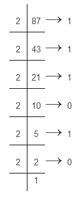

Suppose we are converting the decimal number (87)10. Now the conversion is shown below

Binary number system can be converted into other number systems. The conversion of binary number to other system indirectly means the conversion of base or radix. The several binary conversions are:-
(a) Binary to decimal conversion and decimal to binary conversion
(b) Binary to octal conversion and octal to binary conversion
(c) Binary to hexadecimal conversion and hexadecimal to binary conversion
Decimal to Binary Conversion
Here, 3, 4, 5 and 4 are digits of decimal system. 103, 102, 101 and 100 are multiplier of the respective digits. 10 is known as base of the decimal system.
Now examine this decimal number in different way.
| For that we divide 3454 by base 10 and we get 345 as the quotient and 4 as the remainder. | 103454→ 4 | ||
|---|---|---|---|
| Divide again 345 by 10 and we get 34 as the quotient and 5 as the remainder. | 10 | 345 | → 5 |
| Divide 34 by 10 and we get 3 as the quotient and 4 as the remainder. | 10 | 34 | → 4 |
| 3 |
Now if we write side by side from last quotient to first reminder we will get 3454 which is decimal equivalent of natural number three thousand four hundred fifty four.
This is a common technique of converting any natural number to any base system.
In above method if we use base 2 in place of base 10, we will get binary equivalent of three thousand four hundred fifty four.
| For that we divide 3454 by base 2 and we get 1727 as the quotient and 0 as the remainder. | 2 | 3454 | → 0 |
| Divide again 1727 by 2 and we get 863 as the quotient and 1 as the remainder. | 2 | 1727 | → 1 |
| Divide again 863 by 2 and we get 431 as the quotient and 1 as the remainder. | 2 | 863 | → 1 |
| Divide again 461 by 2 and we get 215 as the quotient and 1 as the remainder. | 2 | 461 | → 1 |
| Divide again 215 by 2 and we get 107 as the quotient and 1 as the remainder. | 2 | 215 | → 1 |
| Divide again 107 by 2 and we get 53 as the quotient and 1 as the remainder. | 2 | 107 | → 1 |
| Divide again 53 by 2 and we get 26 as the quotient and 1 as the remainder. | 2 | 53 | → 1 |
| Divide again 26 by 2 and we get 13 as the quotient and 0 as the remainder. | 2 | 26 | → 0 |
| Divide again 13 by 2 and we get 6 as the quotient and 1 as the remainder. | 2 | 13 | → 1 |
| Divide again 6 by 2 and we get 3 as the quotient and 0 as the remainder. | 2 | 6 | → 0 |
| Divide again 3 by 2 and we get 1 as the quotient and 1 as the remainder | 2 | 3 | → 1 |
| 1 |
For Decimal to binary conversion, we write side by side from last quotient to first reminder we will get 110101111110 which is binary equivalent of natural number three thousand four hundred fifty four. This how we do decimal to binary conversion.
Binary to Decimal Conversion
There is an inter relation among all the numbers in different number systems. And there are specific methods to transform one number of specific number system to shift it into the number in different number system. Here we are going to illustrate how a number in binary number system can be transformed into a number in decimal number system.
First of all let us take any binary number
Suppose we have taken (100011)2
Now the weightage of each digit from right to left is 20, 21, 22…. Respectively depending on the number of digits (This is only for transforming a binary number into an equivalent decimal number). This is multiplied with the digits of the binary number respectively and the products are multiplied. The final sum is the equivalent decimal number. The procedure is illustrated below
(100011)2 = 1*22 + 0*24 + 0*23 + 0*22 + 1*21 + 1*20
= 32 + 0 + 0 + 0 + 2 + 1
= 35
As we have shown a decimal number 3454 can also be represented as 3X103 + 4X102 + 5X101 + 4X100. Here 3, 4, 5, 4 are digits used in decimal system. 10 is base of the system. 103, 102, 101, and 100 are multiplier of respective digits.
In binary system, we only use 1 & 0 as digits and 2 as base. 2n, 2n - 1, 2n - 2, ...............22, 21, 20 are multipliers in binary system.
For binary to decimal conversion we add all products of the digits and their respective multipliers. Where the multipliers or weights of the binary digits from Least Significant Bits are 20, 21,22,23, 24 respectively . Now the bits are multiplied with their weights and the sum of those products is the respective decimal number.
| Bit Position | 11 | 10 | 9 | 8 | 7 | 6 | 5 | 4 | 3 | 2 | 1 | 0 |
|---|---|---|---|---|---|---|---|---|---|---|---|---|
| Multipliers | 211 | 210 | 29 | 28 | 27 | 26 | 25 | 24 | 23 | 22 | 21 | 20 |
| Binary digits | 1 | 1 | 0 | 1 | 0 | 1 | 1 | 1 | 1 | 1 | 1 | 0 |
| DigitXMultiplier | 1x211 | 1x210 | 0x29 | 1x28 | 0x27 | 1x26 | 1x25 | 1x24 | 1x23 | 1x22 | 1x21 | 0x20 |
| 1x211 + 1x210 + 0x29 + 1x28 + 0x27 + 1x26 + 1x25 + 1x24 + 1x23 + 1x22 + 1x21 + 0x20 = 3454 |
Now let us follow the following steps mathematically for binary number 11010.
(11010)2 → 1 X 24 + 1 X 23 + 0 X 22 + 1 X 21 + 0 X 20
= 16 + 8 + 2 = (26)10
∴ (11010)2 = (26)10
Hence (26)10 is the required decimal number.This is how binary to decimal conversion is done.
 by
by